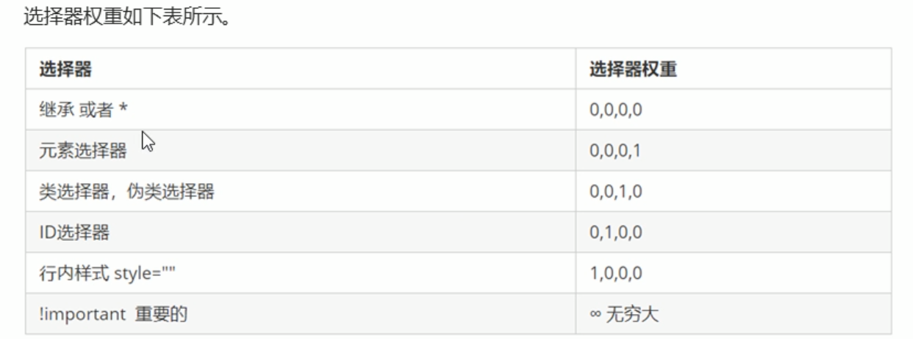

层叠性
相同选择器给设置相同的样式，此时一个样式会覆盖（层叠）另外一个冲突的样式，层叠性主要解决样式冲突的问题。
层叠性原则：
1.样式冲突，遵循的原则就是就近原则，那个样式离结构近就执行那个
2.样式不冲突，不会层叠
继承性
css中的继承：子标签会继承父标签的某些样式，比如文本颜色和字号。
1.恰当的使用继承可以简化代码，降低css样式的复杂性
2.子元素可以继承父元素的样式（text-，font-，line- 这些元素开头的可以继承，以及color属性）
行高的继承性（重要）
body{
font: 12px/1.5 "microsoft yahei";/* 文字大小 行高 字体 */
}
1.行高可以跟单位，也可以不跟单位
2.如果子元素没有设置行高，则会继承父元素的行高1.5
3.此时子元素的行高是：当前子元素的字体大小*1.5
4.body行高1.5这样的写法最大的优势就是里里面子元素可以根据自己字体大小自动调节行高（重要）
css选择器权重顺序

继承的权重是0，如果元素没有直接选中，不管父级元素权重有多高，子元素得到的权重永远是0。
继承的标签被选中修改后权重是最大的